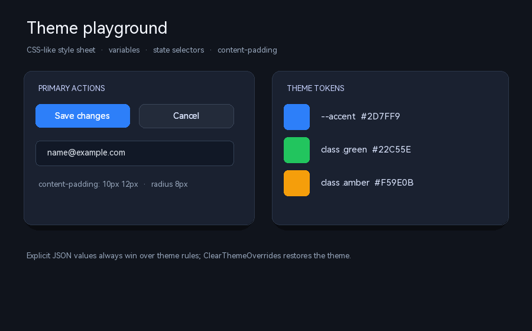
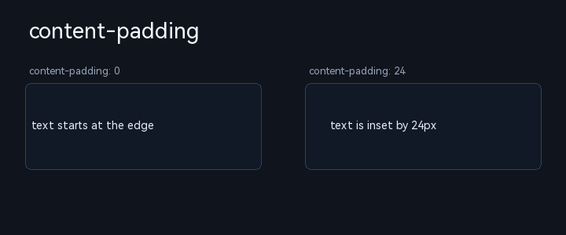
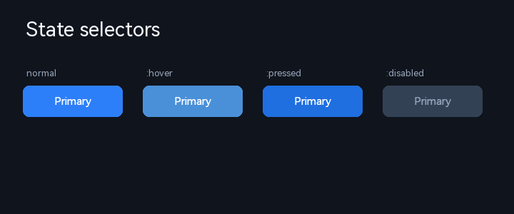

5.8 主题样式（CSS-like Theme）
主题系统在保留旧 theme.fonts / theme.colors 的前提下，提供一组 CSS 风格的样式表能力：变量、选择器、状态、类、变体、媒体查询和容器查询。它适合统一一组控件的视觉，也适合做换肤、紧凑模式和设计器预览。

上图由本页示例主题渲染：variables + panel.card + button.primary + edit-box + content-padding。
5.8.1 最小示例
{
"theme": {
"variables": {
"--bg": "#10141C",
"--accent": "#2D7FF9",
"--text": "#F5F8FF"
},
"styles": [
{ "selector": "panel.root",
"declarations": { "background": "var(--bg)" } },
{ "selector": "label.title",
"declarations": { "text-color": "var(--text)", "font-size": 24 } },
{ "selector": "button.primary",
"declarations": {
"background": "var(--accent)", "text-color": "#FFFFFF",
"border-radius": 8, "padding": "8 16"
} },
{ "selector": "button.primary:hover",
"declarations": { "background": "#4A90D9" } }
]
},
"controls": [
{ "type": "panel", "id": "root", "classes": ["root"],
"rect": { "x": 0, "y": 0, "w": 640, "h": 360 },
"children": [
{ "type": "label", "classes": ["title"],
"rect": { "x": 32, "y": 28, "w": 400, "h": 36 }, "caption": "Theme" },
{ "type": "button", "classes": ["primary"],
"rect": { "x": 32, "y": 90, "w": 160, "h": 40 }, "caption": "Save" }
] }
]
}规则从上到下按选择器优先级与声明顺序层叠；控件的 JSON 显式属性优先于主题。
5.8.2 结构总览
| 字段 | 类型 | 说明 |
|---|---|---|
variables | object | 变量表；值通过 var(--name) 引用。支持多级引用，循环引用会停止解析。 |
styles | array | 基础规则：[{selector, declarations}]。 |
variants | object | 命名变体，例如 dark；结构与基础主题相同，可选 styles/declarations/media/containerQueries。 |
media | array | 视口媒体查询；每项含 id、query、variables、styles、declarations。 |
containerQueries | array | 祖先容器查询；每项含 id、container、query、variables、styles、declarations。 |
fonts / colors | object | 旧主题语法，继续兼容；新规则可与旧主题同时存在。 |
5.8.3 选择器
| 形式 | 示例 | 说明 |
|---|---|---|
| 类型 | button、label、panel | 匹配控件的 control-type（kebab 小写）。 |
| 类 | .primary、button.primary | 匹配 JSON classes 中的类名；theme-role 是兼容别名。 |
| ID | #saveBtn | 匹配 JSON id。 |
| 复合 | button.primary#saveBtn | 类型 + 类 + ID 同时满足。 |
| 状态伪类 | button.primary:hover | 支持 :hover / :pressed / :disabled / :selected；当前引擎四态为 normal/hover/pressed/disabled，:selected 近似使用 pressed 通道。 |
| 通配 | * | 匹配全部参与主题的控件。 |
V1 不支持后代选择器、子选择器、属性选择器、逗号分组与 !important。复杂选择器请拆成多条规则。
优先级与层叠
- 显式值最高：JSON 显式属性与公开 C ABI/Binding
Set*。 - 规则权重：
#id>.class>类型；同权重按声明顺序后者覆盖；状态规则优先于同选择器的无状态规则。 - 层序：基础普通 → 基础媒体 → 基础容器 → 变体普通 → 变体媒体 → 变体容器。
5.8.4 声明属性逐个说明
声明值中的颜色支持 #RRGGBB / #RRGGBBAA、rgb(r,g,b)、rgba(r,g,b,a) 与常用颜色名；数值支持数字或数字字符串。
background（背景色）
设置背景常态色；与状态伪类组合时写入对应状态。背景色 alpha>0 会自动取消内部透明绘制。
{ "selector": "button.primary",
"declarations": { "background": "#2D7FF9" } }
{ "selector": "button.primary:hover",
"declarations": { "background": "#4A90D9" } }
{ "selector": "button.primary:pressed",
"declarations": { "background": "#1F6FE0" } }
{ "selector": "button.primary:disabled",
"declarations": { "background": "#334155", "text-color": "#94A3B8" } }text-color（文字色）
设置文字常态色；状态规则分别写入 hover/pressed/disabled。没有显式文字色的控件可以继承父链的“主题文字色”，但父控件 JSON 显式文字色不参与继承。
{ "selector": "label.title",
"declarations": { "text-color": "#F5F8FF", "font-size": 28 } }
{ "selector": "label.muted",
"declarations": { "text-color": "#94A3B8", "font-size": 13 } }border-color（边框色）
设置边框颜色；控件需同时开启 border-visible（或由键自动开启）才可见。定位规则同文字色。
{ "selector": "panel.card",
"declarations": { "background": "#1A2130", "border-color": "#2B3648" } }text-shadow 与 shadow-offset-x / shadow-offset-y
text-shadow 是文字阴影颜色（alpha>0 即启用），shadow-offset-x / shadow-offset-y 控制偏移。主题规则通常只声明颜色，偏移继承控件原值。
{ "selector": "label.title",
"declarations": {
"text-shadow": "#00000080",
"shadow-offset-x": 2,
"shadow-offset-y": 2
} }font-family / font-size / font-style
字体名使用 FontNameFromString 接受的枚举名（见 C ABI GetFontName）。字号为整数 px；样式支持 normal / bold / italic / underline / strikethrough（当前 Label 文本路径最完整，按钮/编辑类支持字体名与字号）。
{ "selector": "label.title",
"declarations": {
"font-family": "harmonyos-sans-sc-regular",
"font-size": 28,
"font-style": "bold"
} }没有显式字体的控件沿父链继承最近的主题字体；JSON 显式 font/font-size 逐通道覆盖主题与继承。
border-radius（通用圆角）
设置背景与边框的圆角半径（px）。基础控件统一支持；嵌套控件各自生效。
{ "selector": "panel.card",
"declarations": { "border-radius": 14 } }
{ "selector": "edit-box",
"declarations": { "border-radius": 8 } }box-shadow（通用盒阴影）
对象形式：{ "color", "offset-x", "offset-y", "blur", "spread" }。当前实现为无高斯模糊的扩展近似：按偏移/扩散绘制一层半透明圆角矩形；blur 作为圆角扩展量参与近似。
{ "selector": "panel.card",
"declarations": {
"box-shadow": {
"color": "#00000066", "offset-x": 0, "offset-y": 10,
"blur": 24, "spread": 0
}
} }padding → content-padding（通用内容内边距）
CSS 声明名保持 padding，内部映射到通用属性 content-padding；写法：数字（四边）、"v h"、"t r b l"。控件内容（文本、输入区、容器子控件、Tab 页内容）在 contentRect 内排布；外框、状态命中范围保持不变。
{ "selector": "button.primary",
"declarations": { "padding": "8 16" } }
{ "selector": "edit-box",
"declarations": { "content-padding": "10 12" } }
{ "selector": "panel.card",
"declarations": { "content-padding": { "left": 16, "top": 16, "right": 16, "bottom": 16 } } }
padding（Float）保持原语义；通用键是 content-padding。控件 content-padding 是外层，layout.padding 是布局引擎内层，两者可叠加。控件专有键
除通用键外，规则可直接写控件属性键，例如 header-background、progress-color、closed-text-color。值按形态尝试颜色、数值、字符串，最终落到控件的 Set* 属性通道。
{ "selector": "list-view",
"declarations": { "header-background": "#202838", "font-size": 14 } }
{ "selector": "progress-bar",
"declarations": { "progress-color": "#22C55E" } }opacity（本批不支持）
opacity 需要离屏合成，当前版本不实现；出现时诊断并忽略，不影响同规则内其它声明。
5.8.5 状态效果

{ "selector": "button.primary",
"declarations": { "background": "#2D7FF9", "text-color": "#FFFFFF" } }
{ "selector": "button.primary:hover",
"declarations": { "background": "#4A90D9" } }
{ "selector": "button.primary:pressed",
"declarations": { "background": "#1F6FE0" } }
{ "selector": "button.primary:disabled",
"declarations": { "background": "#334155", "text-color": "#94A3B8" } }5.8.6 类、theme-role 与 theme-eligible
{ "type": "button", "id": "saveBtn", "classes": ["primary", "toolbar"],
"rect": { "x": 20, "y": 20, "w": 140, "h": 40 }, "caption": "Save" }classes 也可写成字符串："classes": "primary toolbar"。旧字段 theme-role 作为同一个字段的兼容别名。运行时可用 SetString("classes", "primary") 更新并立即重算。
theme-eligible:false 让控件及其整棵子树跳过主题匹配与继承；引擎内部辅助控件（按钮标题、进度条文字、滑块值标签等）默认不参与。宿主提供的 ListView cell/leading control 默认仍可匹配。
5.8.7 变体
"variants": {
"dark": {
"styles": [
{ "selector": "panel.root", "declarations": { "background": "#0B0F16" } },
{ "selector": "button.primary", "declarations": { "background": "#3B82F6" } }
]
}
}
// C ABI
UICornerstone_SetThemeVariant(instance, "dark");
UICornerstone_SetThemeVariant(instance, "default"); // 清空变体变体规则叠加在基础主题之后、显式覆盖之前；未命中的属性沿用基础主题。
5.8.8 媒体查询
"media": [
{
"id": "compact",
"query": { "max-width": 600, "orientation": "portrait" },
"variables": { "--gap": 8 },
"styles": [
{ "selector": "label.title", "declarations": { "font-size": 20 } },
{ "selector": "button.primary", "declarations": { "padding": "6 10" } }
]
}
]query 也可写成字符串："(max-width: 600px)"。支持 min-width/max-width/min-height/max-height/orientation/min-scale/max-scale；媒体声明中的变量只在该媒体命中时覆盖。
视口尺寸变化、窗口 resize、SetViewport 会标记 dirty，并在帧内合并重算；也可调用 UICornerstone_RefreshResponsiveTheme(instance, w, h) 强制刷新。
5.8.9 容器查询
"containerQueries": [
{
"id": "narrow",
"container": "panel.sidebar",
"query": { "max-width": 280 },
"styles": [
{ "selector": "button", "declarations": { "font-size": 12, "padding": "4 8" } }
]
}
]container 是祖先选择器（类型 / 类 / ID 的简单形式）；匹配最近祖先的 contentRect。容器尺寸变化同样进入 dirty 合并；容器查询的层序在媒体查询之后、变体之前（变体最后）。
5.8.10 完整可运行示例
下面是一个可直接放入布局文件的主题片段（结构对应本页第一张效果图）：
{
"theme": {
"variables": {
"--bg": "#10141C", "--card": "#1A2130", "--line": "#2B3648",
"--text": "#F5F8FF", "--muted": "#94A3B8", "--accent": "#2D7FF9"
},
"styles": [
{ "selector": "panel.root", "declarations": { "background": "var(--bg)" } },
{ "selector": "panel.card", "declarations": {
"background": "var(--card)", "border-color": "var(--line)",
"border-radius": 14,
"box-shadow": { "color": "#00000066", "offset-x": 0, "offset-y": 10, "blur": 24 } } },
{ "selector": "label.title", "declarations": { "text-color": "var(--text)", "font-size": 28 } },
{ "selector": "label.muted", "declarations": { "text-color": "var(--muted)", "font-size": 13 } },
{ "selector": "button.primary", "declarations": {
"background": "var(--accent)", "text-color": "#FFFFFF",
"border-radius": 9, "padding": "8 16", "font-size": 15 } },
{ "selector": "button.primary:hover", "declarations": { "background": "#4A90D9" } },
{ "selector": "edit-box", "declarations": {
"background": "#111826", "border-color": "#334155", "text-color": "#E2E8F0",
"border-radius": 8, "content-padding": "10 12", "font-size": 14 } }
]
},
"controls": [
{ "type": "panel", "id": "root", "classes": ["root"],
"rect": { "x": 0, "y": 0, "w": 900, "h": 560 }, "children": [
{ "type": "label", "classes": ["title"],
"rect": { "x": 40, "y": 28, "w": 620, "h": 40 }, "caption": "Theme playground" },
{ "type": "panel", "id": "card", "classes": ["card"],
"rect": { "x": 40, "y": 120, "w": 390, "h": 260 }, "children": [
{ "type": "button", "classes": ["primary"],
"rect": { "x": 20, "y": 56, "w": 160, "h": 40 }, "caption": "Save changes" },
{ "type": "edit-box", "rect": { "x": 20, "y": 118, "w": 335, "h": 42 },
"text": "name@example.com" }
] }
] }
]
}5.8.11 运行时 API
| C ABI | Binding | 说明 |
|---|---|---|
UICornerstone_ApplyTheme(inst, json) | ui.ApplyTheme(json) | 解析并应用主题；保留显式覆盖。 |
UICornerstone_SetThemeVariant(inst, name) | ui.SetThemeVariant(name) | 切换变体；"default"/NULL 清空。 |
UICornerstone_GetThemeVariant(inst, buf, cap, &len) | ui.GetThemeVariant() | 读当前变体。 |
UICornerstone_ClearThemeOverrides(inst, ctl) | ui.ClearThemeOverrides(ctl) | 清除该控件显式覆盖并重算；传 NULL 重算整树。 |
UICornerstone_RefreshResponsiveTheme(inst, w, h) | ui.RefreshResponsiveTheme(w, h) | 重新评估媒体/容器查询；w/h=0 用视口。 |
UICornerstone_GetActiveMedia(inst, buf, cap, &len) | ui.GetActiveMedia() | 返回当前命中的媒体/容器 id（逗号分隔）。 |
UICornerstone_SetContentPadding(inst, ctl, l, t, r, b) | ctl.SetContentPadding(l,t,r,b) | 设置通用内容内边距。 |
UICornerstone_GetContentPadding(inst, ctl, &l, &t, &r, &b) | ctl.GetContentPadding(...) | 读取内容内边距。 |
5.8.12 兼容、诊断与限制
- 旧
fonts/colors主题无需修改即可继续使用；新字段为增量能力。 - 显式 JSON/公开
Set*始终优先；内部状态同步不登记为显式覆盖；ClearThemeOverrides恢复主题值。 - 颜色规则只写状态通道；
:selected当前近似 pressed。 - 不支持后代/属性选择器、
!important、opacity；出现时会诊断并忽略，不崩溃、不影响同规则其它声明。 - 主题变更不会重建控件树，不丢焦点/滚动位置；布局矩形变化仍需布局引擎或控件自身重排。
- DLL/Binding/宿主必须同批配套；旧引擎遇到新字段按版本不匹配处理。